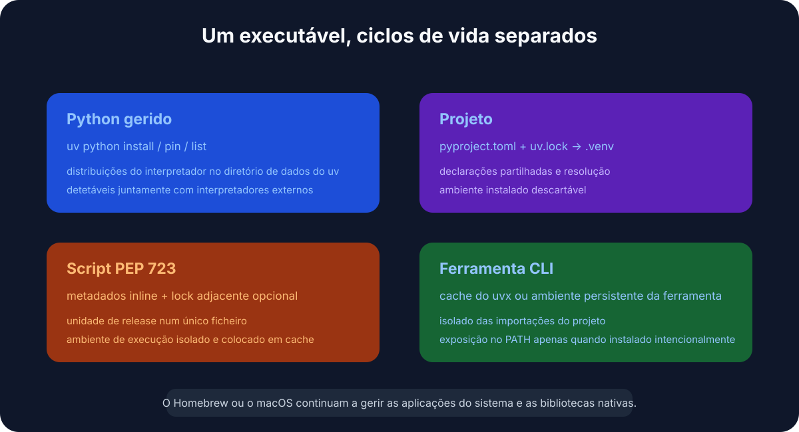
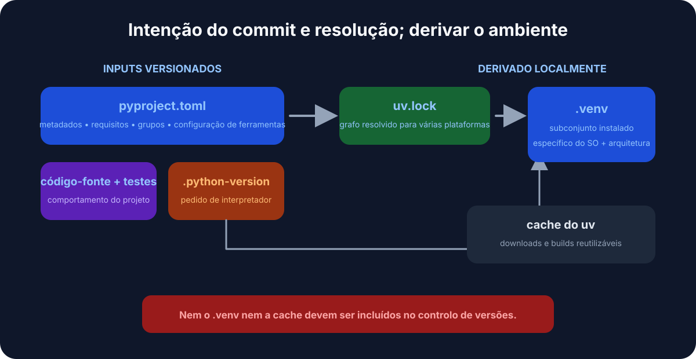
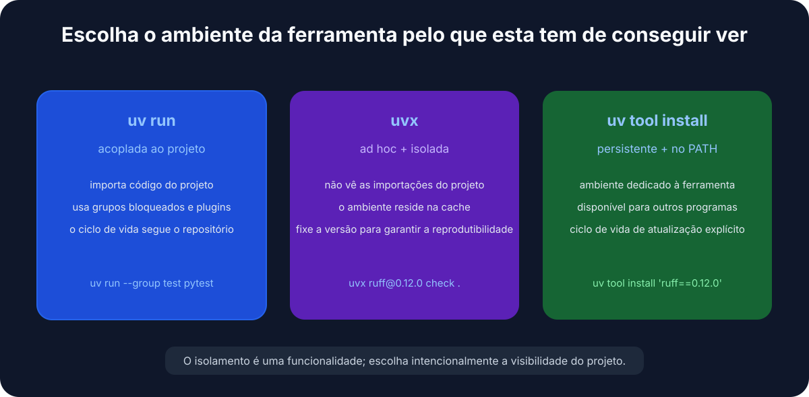
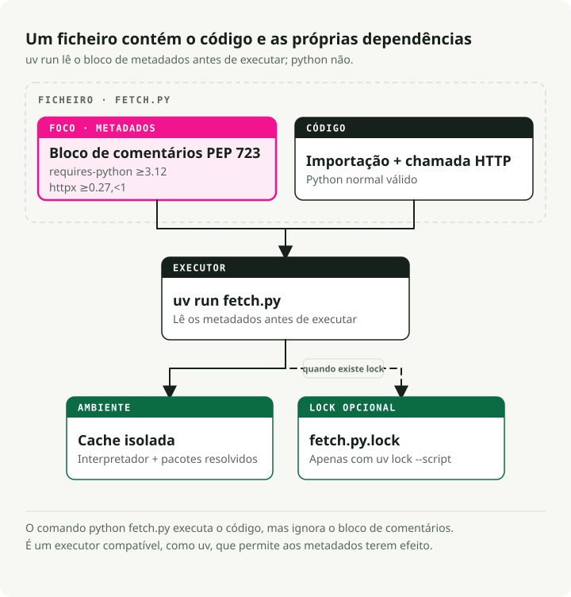

Tradução automática
Este artigo foi traduzido automaticamente a partir da versão original em inglês.
uv no macOS: Gestão de Versões, Projetos e Ferramentas Python
# Install uv
brew install uv
# For new projects (modern workflow)
uv init # create project structure
uv add pandas numpy # add dependencies
uv run train.py # run your script
# For existing projects (legacy workflow)
uv venv # create virtual environment
uv pip install -r requirements.txt # install dependencies
uv run train.py # run your script
# Run tools without installing them
uvx ruff check . # run linter
uvx black . # run formatter
# Run a single-file script with its own dependencies (no project needed)
uv run fetch.py # uv reads the inline deps and runs it
TL;DR: Utilize uv como o gerenciador padrão de projetos e ferramentas em Python no macOS. Mantenha o Homebrew para pacotes do sistema e instale versões do Python por meio de uv python, fixar dependências de pin pyproject.toml, e utilize uvx para ferramentas CLI únicas.
Por que usar o uv para Python no macOS?
Se já utiliza o Python há algum tempo, provavelmente lida com pip, virtualenv, pip-tools, pyenv, e poetry dependendo do projeto. uv Faz tudo o que essas ferramentas fazem, mas com apenas um ficheiro binário.
Está escrito em Rust e, na minha máquina, instala pacotes aproximadamente 10 a 100 vezes mais rápido do que a antiga solução.
O maior benefício para mim é ter deixado de alternar entre ferramentas ao longo das tarefas.

Substitui pip e pip-tools para a gestão de pacotes, pyenv para instalar versões do Python, virtualenv/venv para ambientes, pipx para executar ferramentas, e poetry ou pdm para fluxos de trabalho de projeto.
Instalar o uv
A forma mais simples de instalar uv no macOS, é feito através do Homebrew:
brew install uv
uv detecta automaticamente a arquitetura do seu Mac (Apple Silicon ou Intel), pelo que não é necessária nenhuma configuração adicional.
Para mantê-lo atualizado:
brew upgrade uv
# OR
uv self update
Conceitos fundamentais
uv cobre três casos de uso:
- Projetos — criação de uma aplicação ou biblioteca com dependências.
- Scripts — execução de um script Python de ficheiro único com dependências embutidas.
- Ferramentas — execução de utilitários da linha de comando (como
ruffouhttpie) em nível global.
1. Gestão de projetos
Para novos projetos, uv utiliza o padrão pyproject.toml para configuração e multiplataforma uv.lock para compilações reprodutíveis.

iniciar um novo projeto:
uv init my-project
cd my-project
Isso cria um pyproject.toml, um .gitignore, e um hello.pyAdicionar dependências:
# Runtime dependencies
uv add pandas requests
# Development dependencies
uv add pytest ruff --dev
Execute o seu código:
uv run hello.py
uv gerencia o ambiente virtual em .venv para si. Não é necessário ativá-lo manualmente.
2. Gestão de versões do Python
uv instala e gere as versões do Python por si, mantendo-as em ~/.cache/uv. Se tem vindo a utilizar pyenv Para isso, pode simplesmente descartá-lo.
Instalar uma versão específica:
uv python install 3.12
Fixe uma versão para o seu projeto:
uv python pin 3.11
Isso escreve um .python-version arquivo. No seguinte uv run, ele utiliza a versão fixada e descarrega-a se necessário. A sua equipa e o CI acabam por utilizar a mesma versão do Python, sem qualquer coordenação adicional.
3. Executar ferramentas com uvx e uv tool install
uvx (um alias para uv tool run) executa ferramentas de linha de comando em Python sem as adicionar ao seu ambiente global ou às dependências do projeto.
# Run a linter
uvx ruff check .
# Run a formatter
uvx black .
# Start a temporary Jupyter server
uvx --from jupyterlab jupyter lab
Cada ferramenta é executada no seu próprio ambiente temporário, pelo que não existe conflito de versões com o que quer que já esteja instalado no seu projeto.

Dois detalhes aos quais recorro constantemente:
- Fixar a versão diretamente com
@:uvx ruff@0.6.0 check ., ou forçar a versão mais recente comuvx ruff@latest. - O nome da instrução não corresponde ao pacote? Utilize
--from. O pacotejupyterlabenvia osjupytercomando, portanto estáuvx --from jupyterlab jupyter lab. O mesmo para--from httpie http. - Precisa de uma dependência adicional para um plugin? Adicione-a com
--with:uvx --with mkdocs-material mkdocs serveSe utilizar uma ferramenta diariamente, instale-a uma única vez em vez de criar um ambiente novo a cada utilização:
uv tool install ruff # now `ruff` is on your PATH
uv tool list # see what's installed
uv tool upgrade --all # update everything
uv tool uninstall ruff
A regra prática: uvx para execuções únicas ou em pipelines de CI, uv tool install para os seus scripts de uso diário.
Projetos legados (requirements.txt)
requirements.txt Teve um bom desempenho inicial. Trata-se de uma lista simples de pacotes sem ficheiro de bloqueio, sem separação entre dependências de aplicação e de desenvolvimento, e sem qualquer registo que explique por que determinados pacotes foram fixados. Isso está tudo bem até ao dia em que se tenta recriar uma compilação de há oito meses e se descobre que “fixado” significava simplesmente o que o PyPI resolveu naquele momento.
Se é o proprietário do projeto, migre-o. uv lê a sua lista existente diretamente para um pyproject.toml:
uv init --bare # minimal pyproject.toml, no scaffolding
uv add -r requirements.txt # import runtime dependencies
uv add --dev -r requirements-dev.txt # and dev ones, if you split them
Você tem agora um pyproject.toml e um real uv.lock que fixa as versões resolvidas exatas. Confirme se tudo foi transferido corretamente. uv pip freeze, elimine o antigo requirements.txtE não olhe para trás.
Mas talvez você esteja a executar o mesmo requirements.txt Desde a versão 3.6 do Python, e como você não está interessado na minha opinião sobre o assunto… Tudo bem. uv continua a funcionar como substituto direto para pip e venv, não é necessária nenhuma migração:
# Create a virtual environment
uv venv
# Install dependencies
uv pip install -r requirements.txt
# Run it
uv run python app.py
Os mesmos comandos que já conhece, apenas mais rápidos. Nada no fluxo de trabalho anterior piorou; é apenas que já não precisa de o utilizar.
Scripts de ficheiro único com dependências embutidas
Este é o recurso que mudou a forma como escrevo código temporário e de montagem. Um script em Python pode declarar as suas próprias dependências dentro do ficheiro, num bloco de comentários definido por PEP 723. Não pyproject.toml, não requirements.txt, não existe ambiente virtual para criar — uv run lê o bloco, cria um ambiente em cache e executa o ficheiro.
É importante esclarecer o que está a fazer o trabalho aqui: isto não é uma funcionalidade da linguagem Python, nem é um uv invenção. O bloco é apenas um comentário, portanto, em formato simples. python fetch.py ignora-o e falha devido às importações ausentes. O PEP 723 é um padrão comum, pelo que qualquer executor compatível lê o mesmo bloco — pipx run, O Hatch e o PDM também o suportam. uv acontece ser a forma mais rápida de o utilizar, e é por isso que o resto desta secção utiliza uv run.

Aqui está tudo num único ficheiro. fetch.py:
# /// script
# requires-python = ">=3.12"
# dependencies = [
# "httpx",
# "rich",
# ]
# ///
import httpx
from rich import print
print(httpx.get("https://api.github.com/repos/astral-sh/uv").json())
Execute-o:
uv run fetch.py
A primeira execução resolve e instala httpx e rich para um ambiente em cache; execuções posteriores reutilizam-no e iniciam-se instantaneamente.
Não é necessário escrever o bloco de metadados manualmente. uv Vou criar a estrutura e editá-la para si:
# Create a new script with the block pre-filled
uv init --script fetch.py --python 3.12
# Add or remove dependencies
uv add --script fetch.py httpx rich
uv remove --script fetch.py rich
Para um experimento rápido, pode até mesmo ignorar completamente o bloco e passar as dependências na linha de comando:
uv run --with httpx --with rich fetch.py
Por que isto é excelente para scripts de automação e desenvolvimento de competências
Eu recorro a isto para os pequenos scripts que não merecem um projeto inteiro: uma correção pontual de dados, um assistente de CI, um Competência Claude Code script, um job cron. O script é a unidade. Pode guardá‑lo num gist, submetê‑lo a qualquer repositório ou entregá‑lo a um colega de equipa. uv run é a única coisa de que precisam para o executar corretamente.
Torne-o diretamente executável com um shebang:
#!/usr/bin/env -S uv run --script
# /// script
# dependencies = ["httpx"]
# ///
import httpx
...
chmod +x fetch.py
./fetch.py # uv handles the environment behind the scenes
O -S divide o shebang em argumentos separados para env passa --script até uv### Bloqueio e fixação de scripts
Para scripts que precisam de continuar a funcionar daqui a meses, existem duas opções.
Bloqueie a resolução exata ao lado do script:
uv lock --script fetch.py # writes fetch.py.lock
Ou fixe um ponto no tempo para uv leva em consideração apenas os pacotes lançados antes de uma data específica — útil para garantir reprodutibilidade sem a necessidade de um ficheiro de bloqueio:
# /// script
# dependencies = ["httpx"]
# [tool.uv]
# exclude-newer = "2025-04-17T00:00:00Z"
# ///
Dicas e truques úteis
Alguns recursos que uso regularmente e que não são evidentes na introdução rápida.
Sincronização a partir do ficheiro de bloqueio em CI. uv sync instala exatamente o que está incluído uv.lock. Adicionar --frozen para falhar de forma evidente caso o ficheiro de bloqueio esteja desatualizado, em vez de tentar resolvê-lo silenciosamente — exatamente o que se deseja em pipelines de CI e em compilações Docker.
uv sync --frozen
Agrupe as suas dependências de desenvolvimento. Para além disso --dev, é possível definir grupos de dependências nomeados em pyproject.toml (docs, lint, test) e sincronize apenas o que é necessário:
uv add --group docs mkdocs-material
uv sync --only-group docs
Inspeccione a árvore de dependências. uv tree mostra o que foi trazido e o quê — e --outdated Atualizações de flags:
uv tree
uv tree --outdated
Exportar para requirements.txt quando uma ferramenta subsequente ainda o exigir:
uv export --format requirements-txt > requirements.txt
Executar um Python pontual com pacotes adicionais, sem necessidade de projeto:
uv run --with pandas --with matplotlib python
Gerir a cache quando o espaço em disco fica limitado ou uma compilação falha:
uv cache clean # wipe the whole cache
uv cache prune # remove only unused entries
Por que é rápido
Três fatores são importantes aqui. Foi escrito em Rust, portanto não há custos de inicialização do Python em cada chamada. Ele armazena globalmente os pacotes compilados — uma vez numpy está instalado num projeto; instalá-lo noutro é, basicamente, instantâneo (no macOS, são utilizados links de cópia sob escrita). Além disso, descarrega e instala pacotes em paralelo, em vez de um de cada vez.
Resumo
| Tarefa | Método antigo | O método UV |
|---|---|---|
| Instalar o Python | pyenv install 3.12 |
uv python install 3.12 |
| Novo projeto | mkdir proj && cd proj && python -m venv .venv |
uv init proj |
| Instalar pacote | pip install pandas && pip freeze > requirements.txt |
uv add pandas |
| Executar script | source .venv/bin/activate && python script.py |
uv run script.py |
| Script + dependências | um projeto, ou um ambiente virtual manual apenas para um ficheiro | bloco inline PEP 723 + uv run |
| Executar a ferramenta uma vez | pipx run black |
uvx black |
| Instalar uma ferramenta | pipx install ruff |
uv tool install ruff |
| CI Reprodutível | pip install -r requirements.txt |
uv sync --frozen |
Eu mudei o meu fluxo de trabalho em Python para uv pouco depois de ter sido lançado e nunca mais voltei atrás. Se ainda estiver a utilizar a tecnologia antiga, experimente-o no seu próximo projeto — foi assim que o testei antes de migrar tudo para esta solução.
Principais Conclusões
- Utilize
uvPara versões do Python, ambientes virtuais, dependências de projeto e ferramentas pontuais, em vez de misturar vários gestores de pacotes. - Mantenha o Homebrew responsável pelos pacotes do sistema, e não pela isolação dos projetos em Python.
- Faça commit
pyproject.tomleuv.lockAssim, a configuração do projeto é reprodutível numa nova máquina. - Preferir
uvxpara CLIs ocasionais quando não se pretende poluir um ambiente global.
Referências
- documentação UV - Gestão de pacotes, projetos e versões do Python. Guia do Utilizador para Empacotamento em Python - padrões e terminologia atuais de embalagem. Documentação do Homebrew - Gestão de pacotes do sistema macOS.